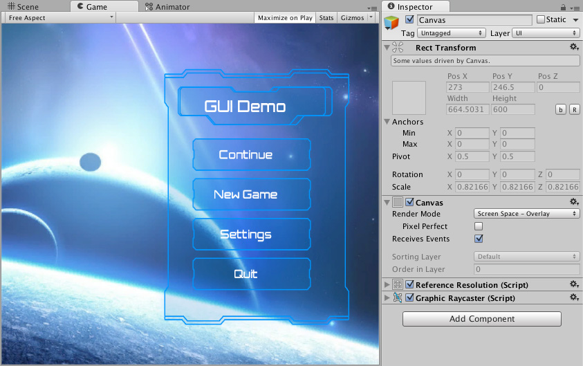
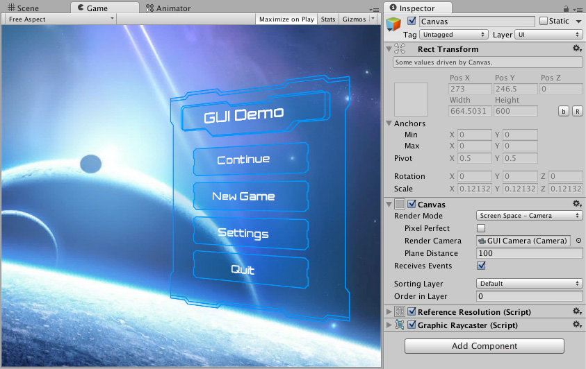
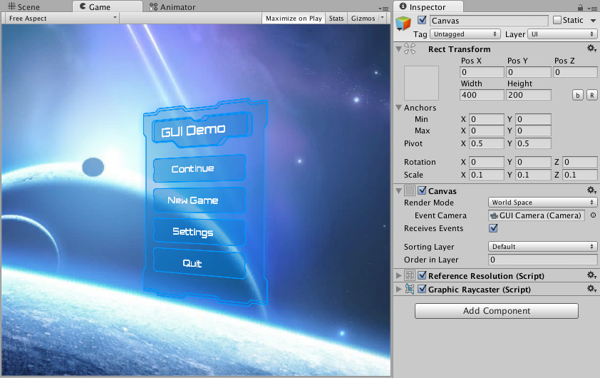

Canvas¶
The Canvas is the area that all UI elements should be inside. The Canvas is a Game Object with a Canvas component on it, and all UI elements must be children of such a Canvas.
Creating a new UI element, such as an Image using the menu GameObject > UI > Image, automatically creates a Canvas, if there isn’t already a Canvas in the scene. The UI element is created as a child to this Canvas.
The Canvas area is shown as a rectangle in the Scene View. This makes it easy to position UI elements without needing to have the Game View visible at all times.
Canvas uses the EventSystem object to help the Messaging System.
Draw order of elements¶
UI elements in the Canvas are drawn in the same order they appear in the Hierarchy. The first child is drawn first, the second child next, and so on. If two UI elements overlap, the later one will appear on top of the earlier one.
To change which element appear on top of other elements, simply reorder the elements in the Hierarchy by dragging them. The order can also be controlled from scripting by using these methods on the Transform component: SetAsFirstSibling, SetAsLastSibling, and SetSiblingIndex.
Render Modes¶
The Canvas has a Render Mode setting which can be used to make it render in screen space or world space.
Screen Space - Overlay¶
This render mode places UI elements on the screen rendered on top of the scene. If the screen is resized or changes resolution, the Canvas will automatically change size to match this.

Screen Space - Camera¶
This is similar to Screen Space - Overlay, but in this render mode the Canvas is placed a given distance in front of a specified Camera. The UI elements are rendered by this camera, which means that the Camera settings affect the appearance of the UI. If the Camera is set to Perspective, the UI elements will be rendered with perspective, and the amount of perspective distortion can be controlled by the Camera Field of View. If the screen is resized, changes resolution, or the camera frustum changes, the Canvas will automatically change size to match as well.

World Space¶
In this render mode, the Canvas will behave as any other object in the scene. The size of the Canvas can be set manually using its Rect Transform, and UI elements will render in front of or behind other objects in the scene based on 3D placement. This is useful for UIs that are meant to be a part of the world. This is also known as a “diegetic interface”.
